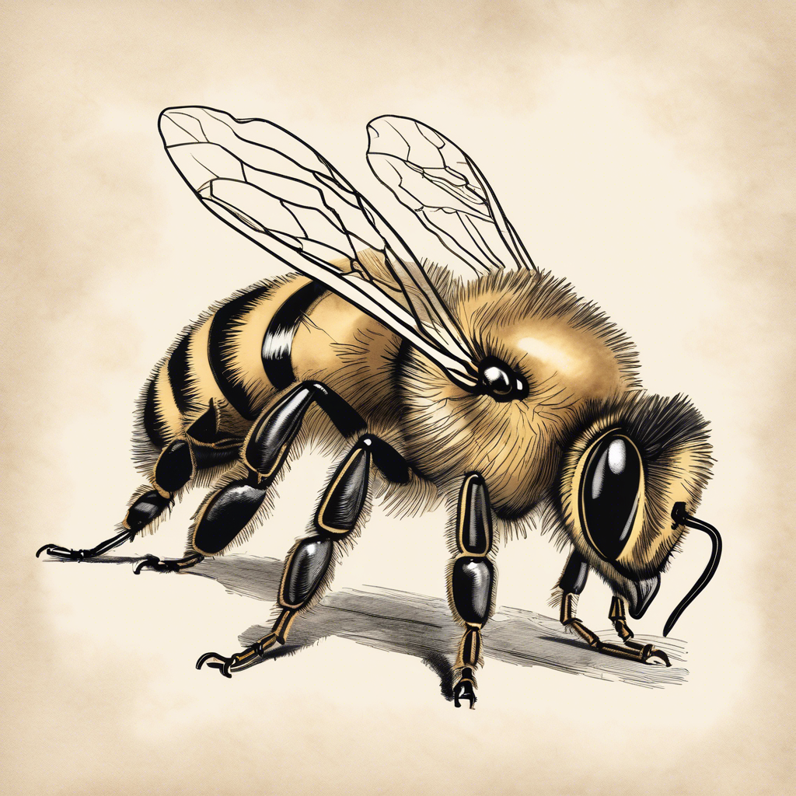

부지런한 꿀벌

꿀벌 소개
꿀벌은 노란색과 검은색 줄무늬가 있는 작은 곤충이에요. 몸에는 부드러운 털이 나 있어요.
크기는 1.5cm 정도로 작지만, 아주 부지런하게 일하는 곤충이랍니다!
꿀벌의 생활
- 꽃에서 꿀물을 모아와요
- 꽃가루를 다른 꽃으로 옮겨줘요
- 벌집에서 꿀을 만들어요
- 여왕벌과 애벌레를 돌봐요
재미있는 사실!
꿀벌은 춤으로 대화를 해요! 꽃을 찾은 꿀벌이 8자 모양으로 춤을 추면, 다른 꿀벌들은 그 춤을 보고 꽃이 어디에 있는지 알 수 있어요.
협동하는 개미

개미 소개
개미는 작지만 힘이 매우 센 곤충이에요. 자기 몸무게의 50배나 되는 무거운 것을 들 수 있어요!
크기는 종류에 따라 다양하지만, 보통 3-5mm 정도로 아주 작아요.
개미의 생활
- 여러 마리가 함께 살아요
- 각자 맡은 일이 있어요
- 더듬이로 서로 대화해요
- 땅 속에 집을 지어요
재미있는 사실!
개미는 페로몬이라는 특별한 냄새로 길을 찾아요. 먹이를 찾은 개미는 돌아올 때 이 냄새를 남겨서 다른 개미들이 따라올 수 있게 해요!
무서운 말벌

말벌 소개
말벌은 꿀벌보다 크고 무서운 곤충이에요. 노란색과 검은색 줄무늬가 있어요.
크기는 2-3cm 정도로 꿀벌보다 커요.
말벌의 생활
- 다른 곤충을 잡아먹어요
- 종이처럼 생긴 집을 지어요
- 여왕벌과 일벌이 있어요
- 가을이 되면 새로운 여왕벌이 태어나요
재미있는 사실!
말벌은 나무를 갉아서 종이처럼 만들어 집을 지어요. 그래서 말벌집은 마치 종이로 만든 것처럼 보인답니다!